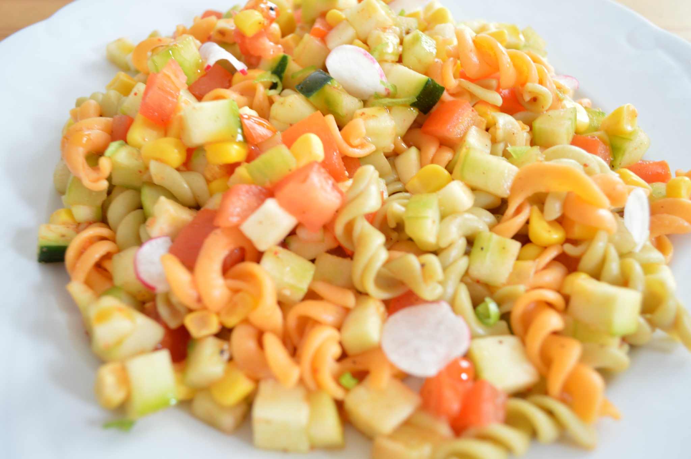

<ion-view view-title="Salade de pâtes">

    <ion-content class="padding">


        <h1>Salade de pâtes</h1>

        

        <p class="gras">Temps de préparation : 30 minutes</p>

        <p class="gras">Temps de cuisson : 5 minutes</p>

        <p class="gras">Ingrédients (pour 2 personnes) :</p>

        <ul>
            <li>- 250 g de pâtes</li>
            <li>- 2 tomates</li>
            <li>- 1 petite boite de petits pois</li>
            <li>- 1 petite boite de saucisse</li>
            <li>- 2 oeufs</li>
            <li>- Persil</li>
            <li>- Mayonnaise</li>
        </ul><br>

        <p class="gras">Préparation de la recette :</p>

        <p>Fait cuire les pâte dans l eau bouillant , égouttez-les, laisser refroidir.</p>

        <p>Fait cuire les oeufs cuit dure (5 min) laisser refroidire et couper les.</p>

        <p>Lavez les tomates couper les en cube.</p>

        <p>Couper les saucisse en rondelle.</p>

        <p>Mettre dans un saladier les pâte (froide) avec saucisse, petit pois, tomate, oeufs et 2 ou 3 c. A. S de mayonnais, persil.</p>

        <p>Mélanger bien le tout.</p>
        
    </ion-content>

</ion-view>